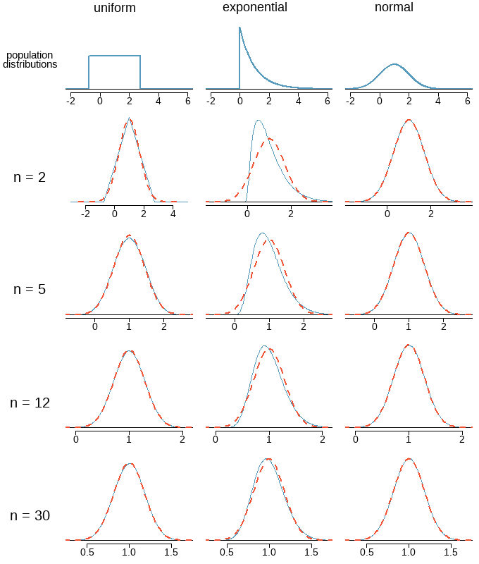

Chapter 6 Normal Probability Distributions
Learning Outcome
| Compute probability for binomial and normal distributions. |
In this chapter, we introduce continuous probability distributions, with the focus on normal probability distributions. We will learn how to calculate probabilities from the standard normal distribution and apply that knowledge to solve some practical problems. Finally, we will learn about sampling distribution and use it to state the Central Limit Theorem.
6.1 Normal Distribution
Properties of a Normal Curve
A normal curve is unimodal and symmetric.
The mean is equal to the median.
Both are the center of the curve.
Probability density function of the normal distribution:
\[P(x) = \dfrac{1}{\sigma\sqrt{2\pi}}e^{-\frac{1}{2} \big( \frac{x-\mu}{\sigma} \big)^2 }, -\infty<x<+\infty\]
\(\mu\) is called the location parameter because it determines where the distribution is located on the horizontal axis.
\(\sigma\) is called the shape parameter because it determines the shape of the distribution.
Linear Transformation of the Nonstandardized Normal Distribution to the Standardized Normal Distribution
| Recall : A z-score is the number of standard deviations that a given value \(x\) is above or below the mean. The \(z\) score is calculated by using one of the following: |
\[ \begin{align} z &= \dfrac{x-\bar x}{s} \\ x = \bar x - 2s &\implies z = -2 \\ x = \bar x - s &\implies z = -1 \\ x = \bar x &\implies z = 0 \\ x = \bar x + s &\implies z = +1 \\ x = \bar x + 2s &\implies z = +2 \\ \end{align} \]
6.1.1 Standard Normal Distribution
The standard normal distribution is a normal distribution with the parameters of \(\mu = 0\) and \(\sigma = 1\). The total area under its density curve is equal to \(1\).
\[ \bbox[yellow,5px] { \color{black}{{P(z)} = \frac {1}{\sqrt {2\pi}}\exp{-\frac{1}{2}z^2}, -\infty<z<+\infty} } \]
Finding Areas Between Two \(z\) Scores
Notation
\[ \begin{cases} P(a < z < b) \ \text{ denotes the probability that the } z \text{ score is between } a \text{ and } b \\ P(z > a) \ \text{ denotes the probability that the } z \text{ score is greater than } a \\ P(z < a) \ \text{ denotes the probability that the } z \text{ score is less than } a \end{cases} \]
Exercise:
\[ \begin{align} &1. \text { Find } P(z < -1) \\ &2. \text { Find } P(z > 2) \\ &3. \text { Find } P(-3 < z < 3) \\ \end{align} \]
Calculation of percentile from \(z\) scores
Example: Suppose cumulative SAT scores are approximated by a normal model with \(\mu = 1500 \text { and } \sigma = 300\). What is the probability that a randomly selected SAT taker scores at least \(1630\) on the SAT?
\(z = \frac{x-\mu}{\sigma}=\frac{1630-1500}{300}=\frac{130}{300}=0.43\)
\(P(z\ge0.43)=0.3336\)
The probability that a randomly selected score is at least \(1630\) on the SAT is \(33\%\). In order words, \(1630\) is \((100 - 33) = 73\) percentile score.
Example: Edward earned a \(1400\) on his SAT. What is his percentile?
\(z = \dfrac{x-\mu}{\sigma}=\dfrac{1400-1500}{300}=\dfrac{100}{300}=-0.33\)
\(P(z\le-0.33)=0.3707\)
Edward is at the \(37\)th percentile.
Calculation of \(z\) score from percentile

\(z = 1.645\)
Interpretation: \(95\%\) of the area under the curve is below \(z = 1.645.\)
Example: Carlos believes he can get into his preferred college if he scores at least in the \(80\)th percentile on the SAT. What score should he aim for?
At \(80th\) percentile, \(z = 0.84\)
\[ \begin{align} z & = \dfrac{x-\mu}{\sigma} \\ 0.84 & = \dfrac{x-1500}{300} \\ 0.84 \times 300 + 1500 & = x \\ x & = 1752 \end{align} \]
the 80th percentile on the SAT corresponds to a score of \(1752\).
More Exercises
The U.S. Air Force requires that pilots have heights between 64 in. and 77 in. Heights of women are normally distributed with a mean of \(63.7\) in. and a standard deviation of \(2.9\) in. What percentage of women meet that height requirement?
To recruit more women pilots in the Air Force, if the height requirements are relaxed to allow middle \(95\%\) of women based on the height distribution \((N \sim (63.7, 2.9))\), what will be the heights of the tallest and shortest women meeting the requirements?
A professor gives a test and the scores are normally distributed with a mean of \(60\) and a standard deviation of \(12\). She plans to curve the scores.
- If she curves by adding \(15\) to each grade, what is the new mean and standard deviation?
- If the grades are curved so that the grades of \(B\) are given to scores above the bottom \(70\%\) and below the top \(10\%\), find the new numerical limits for a grade of \(B\).
- Which method of curving the grades is fairer?
- What is the probability that when a value is randomly selected from a normal distribution, it is an outlier? Note: outliers are defined as data values that are above \(Q_3\) by an amount greater than \(1.5 \times IQR\) or below \(Q_1\) by an amount greater than \(1.5 \times IQR\), where \(IQR\) is the interquartile range.
6.2 Sampling Distribution of a Statistic
The sampling distribution of a statistic represents the distribution of all values of the statistic (e.g. \(\text { sample mean, sample proporton, sample variance, etc.}\)) when all possible samples of the same size \(n\) are drawn from the same population.
Understanding the concept of a sampling distribution is central to understanding statistical inference.
Parameter and Statistics
A statistic is a value from our observed data.
A parameter is a value that describes the population.
\[ \begin{array} {l|c} \text{Name} & \text{Statistic} & \text{Parameter} \\ \hline \text {Proportion} & \hat p & p \\ \text {Mean} & \bar x & \mu \\ \text {Std. Deviation} & s & \sigma \\ \text {Variance} & s^2 & \sigma^2 \\ \text {Correlation} & r & \rho \\ \text {Regression Coefficient} & b & \beta \\ \end{array} \]
Sampling Distribution of Sample Mean
The sampling distribution of the sample mean is the distribution of all values of the sample mean (or the distribution of the variable \(\overline X\)) when all possible samples of the same size \(n\) are drawn from the same population (with mean \(\mu\) and variance \(\sigma^2\)).
Recall: \(E(X) = \dfrac{1}{6}[1 + 2 + 3 + 4 + 5 + 6] = 3.5\)
We can show that
\[ \begin{cases} E(\overline X) = \mu \\ Var(\overline X) = \dfrac{\sigma^2}{n} \end{cases} \]
Proof (optional): \(E(\overline X) = \mu\)
Let \(X_1, X_2,...,X_n\) be \(n\) independently drawn observations from a population distribution with mean \(\mu\) and variance \(\sigma^2\).
Let \(\overline X\) be the mean of these \(n\) independent observations:
\[ \begin{align} \overline X &= \frac{X_1 + X_2 +...+ X_n}{n} \\ \\ E(\overline X) &= E\bigg( \frac{X_1 + X_2 +...+ X_n}{n} \bigg) \\ &= \bigg( \frac {1}{n} \bigg) E(X_1 + X_2 +...+ X_n) \\ &= \bigg( \frac {1}{n} \bigg) [E(X_1) + E(X_2) +...+ E(X_n)] \\ &= \bigg( \frac {1}{n} \bigg) [\mu + \mu +...+ \mu] \\ &= \bigg( \frac {1}{n} \bigg) [n.\mu] \\ &= \mu \\ \end{align} \]
Proof (optional): \(Var(\overline X) = \sigma^2/{n}\)
\[ \begin{align} \overline X &= \frac{X_1 + X_2 +...+ X_n}{n} \\ \\ Var(\overline X) &= Var \bigg( \frac{X_1 + X_2 +...+ X_n}{n} \bigg) \\ &= \bigg( \frac {1}{n^2} \bigg)Var(X_1 + X_2 +...+ X_n \bigg) \\ &= \bigg( \frac {1}{n^2} \bigg)[Var(X_1) + Var(X_2) +...+ Var(X_n)] \\ &= \bigg( \frac {1}{n^2} \bigg)[\sigma^2 + \sigma^2 +...+ \sigma^2] \\ &= \bigg( \frac {1}{n^2} \bigg)[n.\sigma^2] \\ &= \frac{\sigma^2}{n} \\ \sigma^2_{\overline X} &= \frac{\sigma^2}{n} \\ SD_{\overline X} = \sigma_{\overline X} &= {\frac{\sigma}{\sqrt n}} \end{align} \]
Sampling Distribution of a Sample Proportion
The sampling distribution of the sample proportion is the distribution of sample proportions (or the distribution of the variable \(\mathbf { \hat p}\)) with all samples having the same size \(n\) drawn from the same population (with mean proportion \(p\) and variance \(p(1-p)\)).
\[ \begin{align} E(\mathbf { \hat p}) &= p \\ Var(\mathbf { \hat p}) &= \dfrac{p(1-p)}{n} \end{align} \]
Sample Means of 10,000 Trials
Sampling Distribution of a Sample Variance
The sampling distribution of the sample variance is the distribution of sample variances (i.e. the variable \(s^2\)), with all samples having the same sample size \(n\) taken from the same population.
Sample Means of 10,000 Trials
Recall: \(\sigma^2 = \dfrac{1}{6}[(1 - 3.5)^2 + (2 - 3.5)^2 + (3 - 3.5)^2 + (4 - 3.5)^2 + (5 - 3.5)^2 + (6 - 3.5)^2] \\ = 2.9\)
Notice that the distribution of sample variances tends to be a distribution skewed to the right.
6.3 Central Limit Theorem
When taking a random sample of independent observations from a population with a fixed mean and standard deviation, the distribution of \(\bar x\) approaches a normal distribution with mean \(\mu\) and standard deviation \(\sigma/\sqrt{n}\), as \(n\) increases.

Normal Approximation for the Sampling Distribution
Three important facts about the distribution of a sample proportion \(\bar x\)
Population has a normal distribution or \(n > 30\)
\[ \begin{align} \text {Mean of all values of } \bar x &: \mu_{\bar x} = \mu \\ \text {Standard deviation of all values of } \bar x &: \sigma_{\bar x} = \dfrac{\sigma}{\sqrt n} \\ z \text { score conversion of } \bar x &: z = \dfrac{\bar x - \mu}{\frac{\sigma}{\sqrt n}} \\ \end{align} \]
Original population is not normally distributed and \(n \le 30\): The distribution of \(\bar x\) cannot be approximated well by a normal distribution, and the methods of this section do not apply.
Three important facts about the distribution of a sample proportion \(\hat p\)
When \(np \ge 10\) and \(n(1-p) \ge 10\)
\[ \begin{align} \text {Mean of all values of } \hat p &: \mu_{\hat p} = p \\ \text {Standard deviation of all values of } \hat p &: \sigma_{\hat p} = \sqrt{\dfrac{p(1-p)}{n}} \\ z \text { score conversion of } \hat p &: z = \dfrac{\hat p - p}{\sqrt{\frac{p(1-p)}{n}}} \\ \end{align} \]
When \(np \lt 10\) and \(n(1-p) \lt 10\): The distribution of \(\hat p\) cannot be approximated well by a normal distribution, and the methods of this section do not apply.
Problem 1:
In the 2012 Cherry Blossom 10 mile run, the average time for all of the runners is \(94.52\) minutes with a standard deviation of \(8.97\) minutes. The distribution of run times is approximately normal. Find the probability that a randomly selected runner completes the run in less than \(90\) minutes.
Solution:
Because the distribution of run times is approximately normal, we can use normal approximation.
\[ \begin{align} z &= \frac{\bar x-\mu_{\bar x}}{\sigma_{\bar x}} \\ &= \frac{90-94.52}{8.97/\sqrt 1} \\ &= -0.504 \\ \\ P(z < -0.504) &= 0.3072 \end{align} \]
There is a \(30.72\%\) probability that a randomly selected runner will complete the run in less than \(90\) minutes.
Problem 2:
Find the probability that the average of 20 runners is less than 90 minutes.
Solution:
Here, \(n = 20 < 30\), but the distribution of the population, that is, the distribution of run times is stated to be approximately normal. Because of this, the sampling distribution will be normal for any sample size.
\[ \begin{align} \sigma_{\bar x} &= \frac{\sigma}{\sqrt n} = \frac{8.97}{\sqrt {20}} = 2.01 \\ z &= \frac{\bar x-\mu_{\bar x}}{\sigma_{\bar x}} = \frac{90-94.52}{2.01}= - 2.25 \\ P(z<-0.504) &= 0.0123 \end{align} \] There is a \(1.23\%\) probability that the average run time of 20 randomly selected runners will be less than 90 minutes.
Problem 3:
Find the probability that less than \(15\%\) of the sample of \(400\) people will be smokers if the true proportion is \(20\%.\)
Solutions:
The mean of the sample proportion is the population proportion: \(\mu_\hat p = 0.20.\)
The standard deviation of \(\hat p\) is described by the standard deviation for the proportion:
\[\sigma_{\hat p}=\sqrt \frac{p(1-p)}{n} = \sqrt \frac{0.2(0.8)}{400} = 0.02\]
\[ \begin{align} z &= \frac{\hat p - \mu_\hat p}{\sigma_\hat p} = \frac{0.15 - 0.20}{0.02} = -2.5 \\ \\ P(z<-2.5) &= 0.0062 \end{align} \]
Problem 4:
\(13\%\) of the US population are left-handed. If an auditorium has \(15\) lefty seats, what is the probability that there will not be enough lefty seats for a class of \(90\) students (in other words, what is the probability that there will be more than \(15\) lefty students in the group)?
Solutions:
\[ \begin{align} \mu_\hat p &= 0.13 \\ \hat{p} &= 15/90 = 0.167 \\ \sigma_{\hat p}&=\sqrt \frac{p(1- p)}{n} = \sqrt \frac{0.13(0.87)}{90} = 0.035 \\ \\ z &= \frac{\hat p - \mu_\hat p}{\sigma_\hat p} = \frac{0.167 - 0.13}{0.035} = 1.06 \\ P(\hat{p}>0.167) &= P(z>1.06) = 0.1446 \end{align} \]